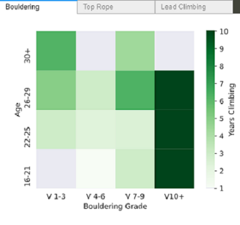

Hao Kai Liao

| You can call me.. | Kevin / Kai |
| I’m located in.. | Queens, NY |
| I’m listening to.. | Rodeo Clown by Dijon |
About Me
Hi ! I’m a student based in New York, with an interest in front end/web development.
I’m currently studying Computer Information Systems @ Baruch College, and have an Associates from The Culinary Institute of America in Baking and Pastry Arts.
In my free time, I love baking bread and sharing food experiences, creating playlists for friends, and bouldering!
uDecide
React, CSS, HTML, CSS, PostgreSQL
A website designed to help YOU make decisions! CUNY Tech Prep semester end group project
Slices (Work in Progress)
Figma, HTML, CSS
Small fruit themed blog site featuring musings on music. inspired by manila-folders!
Critical Force Visualization
Pandas, Seaborn, Matplotlib, Conda
Data Visualizations done based on data from Lattice Training's paper (Climbing Critical Force Data, Giles et al 2020)

Climbing Disciplines
Visualization
Pandas, iPyWidgets, Seaborn, Poetry
Interactive data vis done through crowd sourcing local climbers and their grades in three different climbing disciplines (bouldering, toprope, lead)
